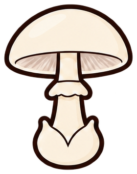

I controlli agiscono sul solo prototipo. Il bianco è un valore documentato per questa specie; la modifica cromatica vettoriale è una prova tecnica da revisionare. I livelli sono tracciati completi ritagliati da regioni anatomiche, non un riconoscimento automatico.